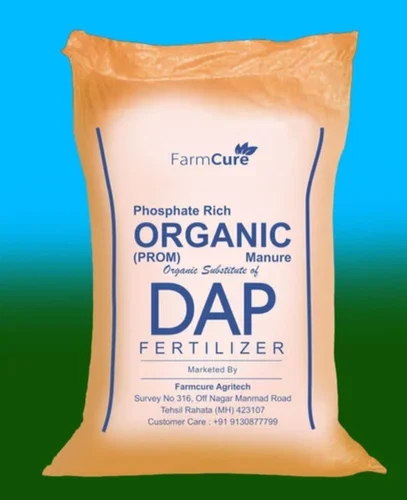
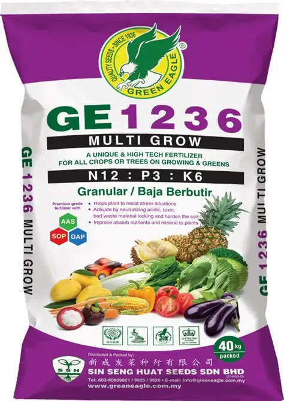
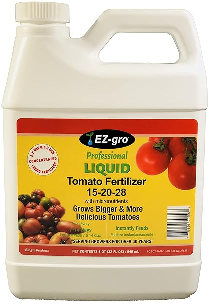

Government Schemes for Farmers
Your Farming Partner
Empowering farmers with data-driven insights for better yields and profits.
Explore Fertilizers

DAP Phosphate

GE-1236

Tomato Fertilizer
View All Fertilizers